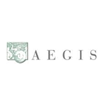
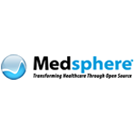
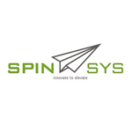
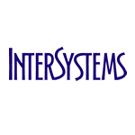
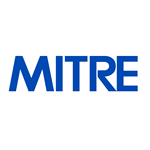

OSEHRA's community is composed over 2000 members across the globe, representing a diverse range of occupations and skillsets. This community maintains VistA and its related technologies by contributing though leadership, expertise, coding support, and testing services.
To participate in the OSEHRA community, register for an account at www.osehra.org. Once registered, you can post thoughts and ideas to the discussion boards. OSEHRA assists the community by establishing workgroups for topics of interest, and providing resources such as conference lines, webinars, and as required development tools such as issue trackers and repositories. You may review the complete list of workgroups here.
OSEHRA supports a number of corporate members and participating organizations which have expertise in VistA. They provide services such as consulting, hosting, integration, training and support for OSEHRA VistA. Additionally, many offer products and extensions which help the product serve a number of medical and operational needs across the community. More information can be found below.
Additionally, many of the developers of VistA participate in the "Hardhats" community. While not managed by OSEHRA, it contains a wealth of VistA knowledge and conversations, and can be accessed here.
The community maintains the vast majority of documentation for VistA. For new community members, this site is meant to be a curated environment which helps them navigate the VistA ecosystem. This site is maintained on Github by OSEHRA, and uses Github pages to render it's presentation by referencing the gh-pages branch.
If you have suggestions for this site, please contribute them to the "Product Site" campaign on Ideascale.
If you have revisions you would like added to this site, please issue a pull request using Github.
VistA is developed and maintained by an open source community. Of particular note however is our largest contributor, the Department of Veterans Affairs. Having acted as the principal developer for VistA for over 30 years, it provided initial funding to establish OSEHRA with the aim of coordinating its future development of this technology with the greater VistA community.
Being a government agency, and one which handles the HIPAA protected healthcare records of million of U.S. Veterans, VA has an extensive software development process known as ProPath which is designed to ensure software meets a high bar of safety prior to implementation. Given this, in order to facilitate the ease with which VA can adopt, share, and collaborate on development, OSEHRA has collaborated with VA to establish a methodology through which code contributions are reviewed for safety, standards compliance, and functionality. OSEHRA's core development processes, and iterative certification activities, are designed to be as minimally intrusive as possible in order to encourage development, while still providing a reasonable sense of assurance that contributions are not dangerous, poorly documented, or incompatible.
Planning & Issue Tracking
While community participants each may have their own development priorities based on interests or organizational needs, OSEHRA VistA provides several tools to capture development activities. These include:
Ideascale - Ideascale provides a forum for community members to propose and up-vote ideas for product enhancement under the "OSEHRA VistA" campaign.
Issue Tracker - A JIRA instance is freely available to the community for issue tracking and agile development support.
Development and Testing
For contributions to be accepted to OSEHRA VistA, they must pass attestation as "Safe, Compliant, and Functional." More information on this process can be found here. In practical terms, this means when development on a feature is at a point where it can be contributed to OSEHRA VistA, it must go through a Gerrit Code Review. To learn more about Gerrit, click here.
Git Repositories - Contributions to OSEHRA VistA must be committed to OSEHRA's Git repositories. To acheive this, they are submitted to Gerrit for review, which automatically commits the code upon acceptance. For more information on how to submit for code review, click here.
Gerrit Review System - Code contributions made to OSEHRA must under go code review. Depending on the nature of the contribution, varying levels of documentation may be requested. For more information on what type of documentation may be asked for, click here.
Testing Dashboard - If you are developing against the OSEHRA development Virtual Machine, or have followed the instructions for establishing a testing machine located on the Resources page, your machine will automatically run nightly tests for code quality. These can be invaluable for understanding the impact of modifications. OSEHRA iteratively enhances this testing suite by incorporating tests from accepted contributions.
Documentation and Licensing
For code to be accepted it must meet certain bars of documentation quality. Often this means enhancing existing documentation. All existing documentation is available under the Resources page. Additionally, OSEHRA offers the following to support development:
Apache 2.0 Guidance - All contributions to be included as a component of OSEHRA VistA must be licensed as Apache Version 2.0. OSEHRA offers guidance on applying this license.
Confluence Wiki - Documentation is preferably supplied in editable formats for ongoing updates. OSEHRA provides a wiki so community members may collectively store and update documentation.
OSEHRA's community consists of member organizations who support and use VistA in a large variety of ways. Many of our members have built businesses around providing installation, integration, and support for VistA in medical settings. Others use it as a source for analytics, an educational tool, or any number of applications enabled by its open nature. As members in good standing of the OSEHRA community, these partners regularly contribute time and effort to maintaining the OSEHRA VistA platform. This includes activities such as maintaining compatability with it's patch stream, contributing enhancements which are universally adoptable, and crafting the product's roadmap.
VistA Supporters
These members are active community participants which provide a variety of OSEHRA VistA capabilities such as integration, hosting, analytics, and extensions.
|  |
AegisA certified small business and premier provider of Information Technology consulting services. |
MedicaSoftMedicaSoft improves healthcare through the intelligent application of technology to clinical systems, health information, and practice management. |
|  |
MedsphereMedsphere is a leading integrator of VistA in the private practice community. |
Northrop GrummanNorthrop Grumman delivers innovative health systems and advanced analytics leading to better outcomes. |
|  |
Spin SystemsHelps Government agencies and commercial enterprises develop and deploy innovative products and custom solutions. |
Government Participants
U.S. Government entities which run VistA and VistA-based code, and formally collaborate with the OSEHRA Community.
Dept. of Veterans AffairsVA operates the nation's largest integrated health care system, with more than 1,700 facilities. |
Community Integrators
These members offer complimentary products and services to VistA across a variety of settings.
|  |
IntersystemsIntersystems provides a powerful platform for connected healthcare, and supports many VistA installations across the world. |
|  |
MitreDedicated to improving healthcare through technology-based transformation. |
OSEHRA's product roadmap is largely determined by the community. However, OSEHRA curates these product management activities and encourages collaboration on them by community members. We also identify and list high level priorities and timelines, and share them with the community. The current product roadmap contains the following effort(s).
Meaningful Use
OSEHRA has recieved contributions which when applied will bring OSEHRA VistA to ONC-ATCB Certification for Meaningful Use Phase 1, and are working with community members for Meaningful Use Phase 2 compliance. It is currently estimated that Meaningful Use Phase 2 Certification will be completed Fall, 2013. To learn more, updates will be made available in the Meaningful Use Workgroup.
OSEHRA VistA is at is core an Electronic Health Record. As such, it has been expanded to act as a platform, capable of integrating with a number of supporting technologies and products. Contributions to OSEHRA which do not directly constitute code changes to OSEHRA VistA are posted to the Technical Journal.
If you have technologies you wish to contribute to OSEHRA, review these instructions for posting your submission to OSEHRA. OSEHRA reviews these contributions and provides support as needed for projects the community aims to work upon, or which will require certification services.